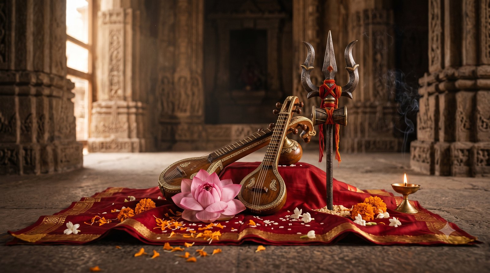

भारत विश्व गुरु क्यों नहीं बन पा रहा?
आज हर जगह एक ही सपना सुनाई देता है: भारत विश्व गुरु बने। आचार्य जी ने माउंट आबू में, अपने पहले आगमन पर, महिलाओं की एक विशाल सभा के सामने इस सपने की एक छूटी हुई कड़ी की ओर ध्यान दिलाया।
उनके अनुसार ज्ञान भी हमारे पास है, शक्तियां भी। कमी केवल एक है: भारत अभी तक अर्धनारीश्वर (शिव और शक्ति का संतुलित, आधा पुरुष आधा नारी स्वरूप) की स्थिति में नहीं आया। यह आज भी पुरुष प्रधान समाज है।
उन्होंने बड़े-बड़े गुरुओं की संस्थाएं देखीं। वहां महिलाएं हैं, साधिकाएं हैं, पर सर्वोच्च पद पर नहीं। देश में प्रधानमंत्री भी केवल एक महिला बनीं। तो बाकी क्यों नहीं?
समानता नहीं, हजार गुना शक्ति
नारी आज पुरुष के समान होने की लड़ाई लड़ रही है। आचार्य जी यहां एक बिल्कुल अलग बात कहते हैं: स्त्री कभी भी पुरुष के बराबर नहीं थी, वह कम से कम हजार गुना शक्तिशाली है।
कैसे? हर मनुष्य, पुरुष हो या स्त्री, किसी मां के गर्भ से आता है। बचपन में मां की शक्ति उस पर हजार नहीं, लाखों गुना होती है। समस्या यह है कि उस समय मां केवल लाड़-प्यार करती है। चाणक्य का सूत्र कुछ और कहता है:
लालयेत् पञ्च वर्षाणि दश वर्षाणि ताडयेत्।
प्राप्ते तु षोडशे वर्षे पुत्रं मित्रवदाचरेत्॥
"पांच वर्ष लाड़-प्यार, अगले दस वर्ष अनुशासन, और सोलह वर्ष का होने पर मित्र जैसा व्यवहार।"
(चाणक्य नीति ३.१८)
आचार्य जी कहते हैं कि यदि उस समय बालक को नहीं सुधारा, तो उसी समाज से कोई चोर, डाकू या बलात्कारी बनता है। हजार गुना शक्ति तब थी; उसका उपयोग तभी करना था।
राखी का धागा और रक्षक का ब्रह्मचर्य
बहनें रक्षाबंधन और भाई दूज पर अपेक्षा रखती हैं कि भाई रक्षा करेगा। पर आचार्य जी एक कठिन सच बताते हैं: रक्षा वही कर पाएगा जो स्वयं ब्रह्मचर्य (संयम और इंद्रिय निग्रह) का पालन करता है। जो दूसरी स्त्री को कष्ट देता है, वह अपनी बहन की रक्षा नहीं कर पाएगा।
सीता माता लंका में रावण के पास रहकर भी सुरक्षित रहीं, क्योंकि राम की तपस्या की शक्ति उनके साथ थी, और सीता का अपना पतिव्रता धर्म भी।
क्या मां को समझे बिना गुरु मिल सकता है?
आज के युवा, लड़के हों या लड़कियां, माता-पिता को उतना सम्मान नहीं देते। आचार्य जी कहते हैं कि जिसे मां समझ में नहीं आई, उसे गुरु भी समझ में नहीं आएगा। महाराष्ट्र में संत ज्ञानेश्वर को "माऊली", यानी मां, कहा जाता है।
हम सबके भीतर पुरुष और स्त्री, दोनों तत्व हैं, शरीर चाहे जो हो। मोक्ष के लिए इन दोनों का संतुलन चाहिए: कभी कठोरता, कभी निर्मल प्रेम। दया, प्रेम और क्षमा स्त्री तत्व के गुण हैं, और गुरु भी तभी गुरु बनता है जब उसमें स्त्री तत्व अधिक हो।
इसलिए महिलाओं के लिए आचार्य जी का संदेश बहुत उत्साह देने वाला है: ये गुण आपके भीतर पहले से हैं, तो आपके लिए मोक्ष बहुत सरल है।
आपके भीतर कठोरता और कोमलता, दोनों में से किसका पलड़ा भारी है?
नारी में भगवान की सात विभूतियां
भगवद्गीता में श्रीकृष्ण बताते हैं कि वे नारी के किन गुणों में प्रकट होते हैं:
मृत्युः सर्वहरश्चाहमुद्भवश्च भविष्यताम्।
कीर्तिः श्रीर्वाक्च नारीणां स्मृतिर्मेधा धृतिः क्षमा॥
"नारियों में कीर्ति, श्री, वाक्, स्मृति, मेधा, धृति और क्षमा मैं हूं।"
(श्रीमद्भगवद्गीता १०.३४)
आचार्य जी इनमें से श्री, वाक्, स्मृति, धृति, मेधा और क्षमा को एक-एक करके खोलते हैं।
श्री: घर में लक्ष्मी तीन बार आती है
श्री का अर्थ है मंगल, लक्ष्मी, दैवी संपत्ति। बहू आती है तो हम "गृहलक्ष्मी" कहते हैं, गृह सरस्वती या गृह काली नहीं। यह लक्ष्मी केवल धन नहीं, घर का प्रेम और शांति है।
और जब स्त्री मां बनती है, तो एक क्षण में उसके भीतर परमेश्वर का भाव जाग जाता है। बच्चा कैसा दिखता है, काला है या गोरा, स्वस्थ है या नहीं, यह जाने बिना ही प्रेम आत्म तत्व से बहने लगता है।
आचार्य जी देवी पुराण के हवाले से बताते हैं कि घर में लक्ष्मी तीन बार आती है:
- १माता के रूप में. जो मां की बात नहीं सुनता, उसकी सलाह ठुकरा देता है कि उसे दुनिया का पता नहीं, उसके घर श्री अधिक नहीं आती।
- २बहू के रूप में. जिस घर में बहू का सम्मान नहीं, वहां से श्री फिर चली जाती है।
- ३पुत्री के रूप में. जो कहते हैं "लड़का होता तो अच्छा होता," उस घर में श्री नहीं टिकती; आ भी जाए तो उसका उपभोग नहीं होता, और उपभोग हो तो आनंद नहीं मिलता।
वाक्: घर में सौम्य, अन्याय के आगे रौद्र
वाक् यानी वाणी। हम मानते हैं कि स्त्री की वाणी प्रेममयी और करुणामयी हो। आचार्य जी कहते हैं, यह पर्याप्त नहीं। दुर्गा सप्तशती देवी को कहती है:
अतिसौम्यातिरौद्रायै नतास्तस्यै नमो नमः।
"जो अति सौम्य भी हैं और अति रौद्र भी।"
(दुर्गा सप्तशती, अध्याय ५)
समस्या यह है कि स्त्री का रौद्र रूप अक्सर पति के सामने आता है, और बाहर वह हर अत्याचार सह लेती है। होना उल्टा चाहिए: घर में अति सौम्य, और कार्यालय या बाहर जहां अन्याय हो, वहां अति रौद्र।
दुर्गा सप्तशती का पहला चरित्र महाकाली का है, फिर महालक्ष्मी, फिर सरस्वती। कलियुग में सशक्तिकरण के लिए काली शक्ति अनिवार्य है।
व्यवहार में इसका अर्थ है अपनी सीमाएं तय करना। ससुराल में सासू मां बोलती जा रही हैं, तो कहां तक सुनना है? आचार्य जी बताते हैं कि ससुराल में पहले एक-दो वर्ष में स्त्री अपनी जो छवि बनाती है, वही सदा के लिए रहती है।
स्मृति, धृति, मेधा: वेदांत के गुण पहले से आपके पास
- स्मृति: याददाश्त।
- धृति: धारणा शक्ति, किसी बात को लंबे समय तक थामे रखना। अष्टांग योग में यही धारणा है।
- मेधा: एक बार सुनी बात को ठीक समय पर ज्यों का त्यों प्रस्तुत कर देना। आचार्य जी बताते हैं कि बारह वर्ष के ब्रह्मचर्य तप से वीर्य और रज ओज बनते हैं, फिर तेज आता है, और तब मेधा जागती है।
आचार्य जी इसे बड़े हल्के-फुल्के उदाहरण से समझाते हैं। पति सब्जी लाना भूल जाता है: "मैं भूल गया जी।" पर पत्नी को बीस साल पहले ननद ने क्या कहा था, वह पूरी तरह याद है। और वह बात ठीक समय पर, किसी समारोह में ही जाकर कहेगी। यही स्मृति, धृति और मेधा है।
ये ही गुण वेदांत सीखने के लिए चाहिए। पुरुषों को इनके लिए सचेत प्रयास करना पड़ता है; स्त्रियों को ये स्वतः मिले हैं।
बस एक कला सीखनी है: क्या याद रखना है और क्या भूलना है। आचार्य जी के अनुसार उत्तम पुरुष वह है जो सामान्य बातें पांच मिनट में भूल जाता है (गुरु की बात नहीं, वह तो जीवन भर धारण करनी है), मध्यम एक सप्ताह में, और कनिष्ठ १८५७ के बाद की बातें आज तक ढोता है। परिवारों के झगड़े यहीं से चलते हैं: "तुम्हारे परदादा ने ऐसा किया था..."
आप अपने मन में कौन सी पुरानी बात अब तक ढो रहे हैं, जिसे छोड़ देना चाहिए?
क्षमा: पर हर किसी को नहीं
स्त्री क्षमाशील है, पर शास्त्र ने हर किसी को क्षमा करने को नहीं कहा। कहीं दुर्गा का रूप भी चाहिए। आचार्य जी की सलाह साफ है: अपनी सीमाएं समय रहते स्पष्ट करो, परिवार में भी, कार्यालय में भी।
जीवनसाथी चुनते समय अंतर्ज्ञान कहां चला जाता है?
आचार्य जी एक सुंदर उदाहरण देते हैं। आप ट्रेन के डिब्बे में चढ़ती हैं, सारी खिड़की वाली सीटों पर पुरुष बैठे हैं, और यात्रा केवल बीस मिनट की है। फिर भी आप पल में पहचान लेती हैं कि कौन ठीक नहीं लगता, कौन गुंडे जैसा है, और जो सभ्य दिखे उसके पास जाकर बैठती हैं।
तो यही अंतर्ज्ञान (intuition) जीवनसाथी चुनते समय कहां चला जाता है? वहां स्त्री माया में, भावना के अधीन हो जाती है।
शास्त्र चार स्तर बताते हैं: शरीर, मन, बुद्धि और आत्मा। पुरुष अधिकतर शरीर और बुद्धि के स्तर पर जीते हैं, तर्क और परिश्रम में। स्त्री अधिकतर मन यानी भावना के स्तर पर, और मां बनने जैसे क्षणों में सीधे आत्म तत्व के स्तर पर। इसमें कमी कोई नहीं, पर सावधानी चाहिए, क्योंकि बुद्धि से कोई भी भावना प्रधान मन को भ्रमित कर सकता है।
पतिव्रता का अर्थ अन्याय सहना नहीं
हमारे संस्कारों में बैठ गया है कि पतिव्रता यानी सब कुछ सहना। आचार्य जी इसे सीधे नकारते हैं। वे कहते हैं कि पति को दारू का गिलास लाकर देने वाली स्त्री को पतिव्रता नहीं कहते, पतिव्रता वह है जो उसकी दारू छुड़ाए।
उनके अनुसार अंग्रेजों और मुगलों के समय से महिलाओं को कमजोर करने के लिए शास्त्रों के इस वर्णन को हल्का किया और बदला गया। शिव जैसा पति हो, तो पार्वती बनना है। अन्यथा यह भी समझना है कि किसके लिए कितना समय देना है, कब रुकना है और कब छोड़ना है।
लिपस्टिक और मोक्ष
आचार्य जी स्वयं को उन गुरुओं में गिनते हैं जो महिलाओं से कहते हैं कि पाउडर-लिपस्टिक लगाने वाली स्त्री को भी मोक्ष मिल सकता है। यदि ऐसा नहीं, तो लक्ष्मी जी का चित्र हटा दो, क्योंकि उन्हें इसी रूप में दिखाया गया है।
देवी केवल सरस्वती नहीं; काली और लक्ष्मी भी उनके स्वरूप हैं। कलियुग में धन के बिना काम नहीं चलता। धर्मस्य मूलम् अर्थः (चाणक्य सूत्र): धर्म का मूल अर्थ, यानी धन, है।
तीन शक्तियां, तीन देवियां
सशक्तिकरण में तीन शक्तियां चाहिए, और तीनों समान रूप से महत्वपूर्ण हैं:
- इच्छा शक्ति, क्रिया शक्ति, ज्ञान शक्ति, जिनके रूप हैं महाकाली, महालक्ष्मी और महासरस्वती।
- महाकाली की सुरक्षा के दो स्तर हैं। पहला शारीरिक, जैसे कराटे सीखना। दूसरा और ऊंचा, आध्यात्मिक शक्ति, जिसके रहते शत्रु बुरी दृष्टि से देख ही नहीं पाता।
यह शक्ति एक वाक्य से नहीं आती। इसे वही गुरु जगा सकता है जो महिला की पीड़ा समझता, जीता और अनुभव करता हो, और जिसके भीतर पुरुष तत्व भी बराबर हो।

जो कहा नहीं जाता, वह रोग बन जाता है
आचार्य जी उपचार शिविरों के अपने अनुभव और शोध से एक चौंकाने वाली बात बताते हैं:
- जो स्त्री अपनी बात व्यक्त नहीं कर पाती, वाणी गले में अटक जाती है, और थायरॉइड होता है। उनके अनुसार भारत में अधिकांश महिलाओं को इसी कारण थायरॉइड होता है।
- घर में "कौन क्या कहेगा" का अनजाना भय घुटनों के दर्द के रूप में आता है, काम करने से नहीं।
- पर चिल्लाकर कहना भी हल नहीं; उससे हृदय और रक्तचाप की समस्या होती है। बात कहनी है, उचित स्वर में।
क्या कोई बात है जो आप बरसों से कह नहीं पाए?
भविष्य गढ़ने से पहले इतिहास
चिकित्सक पहले रोग का इतिहास पूछता है, तभी निदान होता है। वैसे ही महिला सशक्तिकरण के लिए यह जानना होगा कि पिछले दो हजार वर्षों में नारी के साथ क्या हुआ, कितने अत्याचार हुए और क्यों।
गुरु मां के स्वरूप में
ज्योतिष में गुरु (बृहस्पति) कर्क राशि में उच्च का होता है, और कर्क चंद्रमा की, यानी माता की राशि है। धनु में गुरु अग्नि जैसा कठोर है, मीन में भावुक; लोग दोनों को उतना पसंद नहीं करते। सच्चा शिक्षक मां जैसा होता है, जो समय देती है और कभी शुल्क नहीं मांगती।
आचार्य जी एक सीढ़ी बताते हैं: मां को समझो, तो गुरु मां समझ में आएगी; गुरु मां को समझो, तो भारत माता समझ में आएगी। और भारत तभी विश्व गुरु बनेगा जब वह बाकी विश्व को एक मां की तरह पुत्र मानकर समझने को तैयार होगा।
पूजा उसी की होती है जो शक्तिशाली है
हम कहते हैं:
यत्र नार्यस्तु पूज्यन्ते रमन्ते तत्र देवताः।
"जहां नारी की पूजा होती है, वहां देवता रमण करते हैं।"
(मनुस्मृति ३.५६)
पर आचार्य जी पूछते हैं: कलियुग असुरों का राज्य है, तो पूजा करेगा कौन? यह स्थान कोई अपने आप नहीं देगा; इसे स्वयं प्राप्त करना होगा, क्योंकि पूजा उसी की होती है जो शक्तिशाली होती है।
चंड-मुंड, शुंभ-निशुंभ, देवी के सामने किसी का नहीं चला। वे गुण लाने होंगे।
सरस्वती, लक्ष्मी और काली: तीनों स्वरूप स्वीकार
सभा में सब श्वेत वस्त्रों में, सरस्वती स्वरूप में थीं। आचार्य जी ने कहा कि लक्ष्मी और काली के रूप भी उतने ही पवित्र हैं। पुलिस अधिकारी बनना या राजनीति में जाना काली का स्वरूप है, व्यवसाय करके धन कमाना लक्ष्मी का, और ज्ञान सरस्वती का। उनकी संस्था में इन पर कोई पाबंदी नहीं।
कैसा गुरु चाहिए?
अंत में आचार्य जी ने कहा कि महिला सशक्तिकरण के लिए गुरु चाहिए, पर ऐसा जिसके भीतर नारी का मन हो। केवल नारी मन हो तो लोग अनुचित लाभ उठाते हैं, इसलिए थोड़ा पुरुष तत्व, थोड़ी कठोरता भी चाहिए, अर्धनारीश्वर की तरह।
सौम्यता भी चाहिए, और रौद्रता भी। अति सौम्य, अति रौद्र, दोनों।
मुख्य बातें
- भारत के विश्व गुरु बनने की छूटी कड़ी है अर्धनारीश्वर संतुलन।
- स्त्री पुरुष के बराबर नहीं, हजार गुना शक्तिशाली है; मां के रूप में उस शक्ति का सही समय पर उपयोग करना है।
- गीता के अनुसार श्री, वाक्, स्मृति, मेधा, धृति, क्षमा नारी में भगवान की विभूतियां हैं।
- लक्ष्मी घर में माता, बहू और पुत्री के रूप में आती है; तीनों का सम्मान करें।
- घर में अति सौम्य, अन्याय के आगे अति रौद्र; ससुराल और कार्यालय में सीमाएं तय करें।
- क्या याद रखना है और क्या भूलना है, यही कला सीखनी है।
- जीवनसाथी चुनते समय अपने अंतर्ज्ञान को भावना में न खोएं।
- पतिव्रता का अर्थ अन्याय सहना नहीं, पति को गलत मार्ग से लौटाना है।
- सरस्वती के साथ लक्ष्मी और काली भी देवी के स्वरूप हैं; धन और शक्ति गलत नहीं।
- दबाई हुई बात रोग बनती है; उसे उचित स्वर में कहें।
- अपना स्थान स्वयं प्राप्त करना होगा, क्योंकि पूजा उसी की होती है जो शक्तिशाली है।
आगे पढ़ें

क्या आप किसी ऐसे रिश्ते को पकड़े बैठे हैं जो रोज़ आपको तोड़ रहा है? गुणों की दृष्टि से इसे तामसिक रिश्ता कहा जाता है। आइए समझें कि यह क्या है, और…

गुरु क्या है? क्या गुरु केवल एक व्यक्ति हैं, या स्वयं परम सत्य का द्वार?
श्मशान में मत जाओ। गुरु के पास यह मत करो। अधिक पाठ मत करो। शनि देव के मंदिर में ज्यादा मत जाओ।